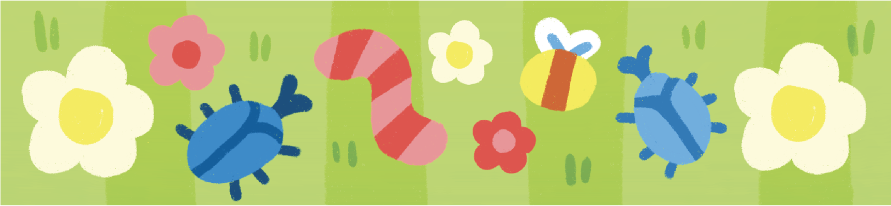

Home
Home Ants
Ants Bees
Bees Beetles
Beetles Butterflies
Butterflies Cockroaches
Cockroaches Flies
Flies Mosquitoes
Mosquitoes Spiders
Spiders Newsletter
NewsletterInvertebrates
Invertebrates are incredibly diverse and make up 97% of all animal species and include insects, sponges, and worms. Unlike vertebrates, invertebrates do no have a backbone, but may have exoskeletons or fluid-filled cavities. Most invertebrates go through metamorphosis, changing form from young to adult, like caterpillars to butterflies.
There are six basic invertebrate groups.
| Group | Examples |
|---|---|
| Arthropods | Insects, Spiders, and Crustaceans |
| Cnidarians | Jellyfish, Corals, and Sea Anemones |
| Echinoderms | Starfish, Sea Cucumbers, Sea Urchins |
| Mollusks | Snails, Slugs, Squids, and Octopuses |
| Segmented Worms | Earthworms and Leeches |
| Sponges | Sea sponges found underwater |
Many possess a hard external shell, or exoskeleton that they molt to grow. Other intvertebrates like worms are soft-bodied.
Source: ThoughtCo.

Vital Roles Insects Play Our Ecosystem

Pollination
Nearly 90% of flowering plant species and 75% of crop plant species depend on pollination by animals - mostly insects.
Overall, one out of every three bits of food humans eat relies on animal pollination in the production process.

Decomposition
Waste-eating insects, called detritivores, act as nature's cleanup crew. They process dung, dead plants, and carrion to release essential nutrients back into the ecosystem.

Pest Control
Predatory insects feed on crop-threatening plants, performing the role of pesticides without chemicals.

Soil Aeration
Termites and ants tunnel and aerate hard ground, helping it retain water and adding nutrients.

Food Source
Insects are in nearly every food chain. Many larger animals such as birds, bats, amphibians, and fish, eat insects before they are in turn eaten by predators.